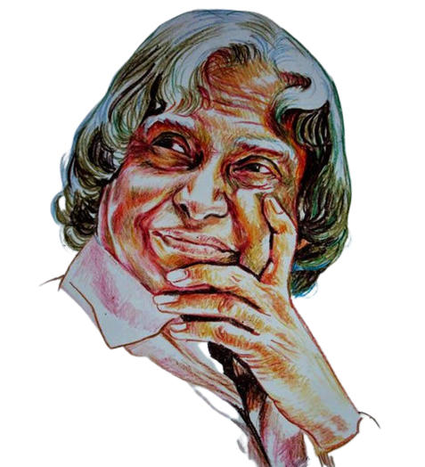

" We are all born with a divine fire in us. Our efforts should be to give wings to this fire and fill the world with the glow of its goodness."
-Dr.APJ Abdul Kalam.

Biography
APJ Abdul Kalam was an Indian scientist and statesman born on October 15, 1931, in Rameswaram, Tamil Nadu, India. He was instrumental in the development of India's missile program and served as the 11th President of India from 2002 to 2007. He was widely popular for his humility, simplicity, and commitment to the welfare of the people. Kalam passed away on July 27, 2015, but his legacy continues to inspire generations.
Education
Even though APJ Abdul Kalam was an average student, his desire to read and spend hours studying and learning Mathematics, proved to create a strong foundation in his initial stage of education. Upon completing his schooling at Rameshwaram Elementary School and Schwartz Higher Secondary School, he continued his graduation in Physics from Saint Joseph’s College and later in 1955, he studied Aerospace Engineering at Madras Institute of Technology.
Acheivements
After completing his higher education, Kalam joined the DRDO (Aeronautical Development Establishment of the Defence Research and Development Organisation) as a scientist and late in the early 1960s, worked with the INCOSPAR (Indian National Committee for Space Research) under Vikram Sarabhai, a renowned space scientist. Things took a magnificent turn when he received transfer orders to the ISRO (Indian Space Research Organization) where he started as a project director of SLV-III, India’s first indigenous Satellite Launch Vehicle, which deployed the Rohini satellite into orbit the earth in July 1980.
His dedication led to the development of 4 missile projects namely Prithvi, Trishul, Akash and Nag. And due to this contribution, he earned the title of the ‘Missile Man of India’. Later in 1992, Kalam was appointed as the Scientific Adviser to the Defence Minister and promoted to Principal Scientific Adviser to the Government of India in 1999.